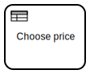

Exercise: API consuming robot
Also this exercise continues to iterate on top of the the previous exercise by replacing the  with a new
with a new  Robot Famework service task for fetching the participants and their achievements from an API instead.
Robot Famework service task for fetching the participants and their achievements from an API instead.
{kind=link}
Mockoon for API mocks
Mockoon is a convenient open source tool for mocking HTTP APIs. It supports simple Open API import, but also allows to enrich end points with Handlebars based response templating using FakerJS helpers for random mock data.
Mockoon provides a GUI application for mock API development and mockoon-cli command-line tool for CI use. The application can be started from the playground desktop Mockoon shortcut.
During the first run, Mockoon greets with a message
{kind=link}
and then starts with a demo project containing a few mocked endpoints.
Serving the mock API
Mockoon Mock API server, by default at http://localhost:3000/, can be started by clicking a green play button (turning red stop button while the API is running). Mock API endpoint templates can be edited while the server is running.
{kind=link}
Participants mock API
Let’s re-use the built-in demo API as our participants API. Update /users endpoint to include fields email, consent and achievements by replacing the existing template (this will also remove friends field).
{
"users": [
{{# repeat (queryParam 'total' '10') }}
{
"firstname": "{{ faker 'name.firstName' }}",
"lastname": "{{ faker 'name.lastName' }}",
"email": "{{ faker 'internet.email' }}",
"consent": {{ faker 'datatype.boolean' }},
"achievements": {{{ faker 'helpers.arrayElements' }}}
},
{{/ repeat }}
],
"total": "{{queryParam 'total' '10'}}"
}
Calling for participants
At this point, it should be clear, that fetching participants from an API endpoint requires Fetch participants robot task, which exports list of participants on its output mapping.
RPA framework, which is included in every new robot created in Robocorp Code by default, comes with RPA.HTTP keyword library, its usage may not be obvious.
So, take a look at this reference implementation:
*** Settings ***
Library RPA.HTTP
Library RPA.Robocorp.WorkItems
*** Variables ***
${PARTICIPANTS_API} %{PARTICIPANTS_API=http://localhost:3000}
${TOTAL} 6
*** Tasks ***
Fetch participants
${url} Set variable ${PARTICIPANTS_API}/users?total=${TOTAL}
${response}= Http Get ${url}
${users}= Set Variable ${response.json()}[users]
Create Output Work Item
Set Work Item Variable participants ${users}
Save Work Item
Looping through a list
Now that participants is a list of workshop participants, the previous process need to be iterated with for every participant. This is possible by copying th previous process and wrapping it into expanded embedded subprocess, which is then configured as multi-instance.
{kind=link}
DMN for mapping values
Another change caused by the API is that instead of full achievement texts for the certificates, we now get a list of codes from ["a", "b", "c"]. This list can be turned into list of full text descriptions with  Map achievements business-rule task.: A multi-instance task for mapping list of codes into text with DMN:
When Code string | Then Description string | Annotations | |
|---|---|---|---|
| 1 | "a" | "Modeling BPMN and DMN" | - |
| 2 | "b" | "Building RCC robot packages" | - |
| 3 | "c" | "Orchestrating RCC with Zeebe" | - |
Resource summary
create-certificate.bpmn
workshop-achievement.dmnworkshop-achievement.html
fetch-participants.zip
../email/create-certificate.zip